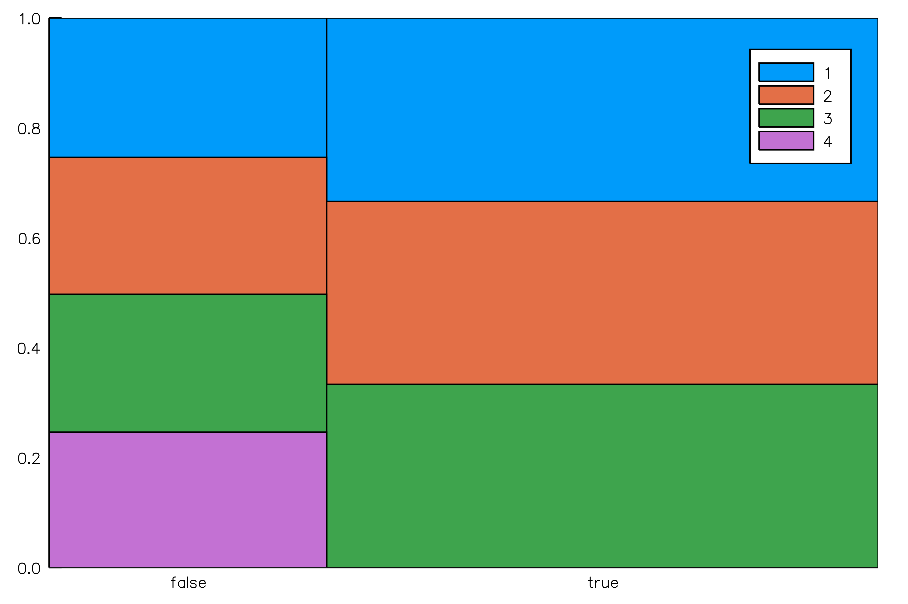

Visualizations
Many Stats Can Be Plotted
s = fit!(Series(Hist(25), Hist(-5:5)), randn(10^6))
plot(s)
Naive Bayes Classifier
The NBClassifier type stores conditional histograms of the predictor variables, allowing you to plot approximate "group by" distributions:
# make data
x = randn(10^5, 5)
y = x * [1,3,5,7,9] .> 0
o = NBClassifier(5, Bool) # 5 predictors with Boolean categories
series((x,y), o)
plot(o)
savefig("nbclassifier.png"); nothing # hide
<!– ## Mosaic Plots
The Mosaic type allows you to plot the relationship between two categorical variables. It is typically more useful than a bar plot, as class probabilities are given by the horizontal widths.
x = rand([true, true, false], 10^5)
y = map(xi -> xi ? rand(1:3) : rand(1:4), x)
s = series([x y], Mosaic(Bool, Int))
plot(s)
savefig("mosaic.png"); nothing # hide –>
Partitions
The Partition type summarizes sections of a data stream using any OnlineStat, and is therefore extremely useful in visualizing huge datasets, as summaries are plotted rather than every single observation.
Continuous Data
y = cumsum(randn(10^6)) + 100randn(10^6)
o = Partition(Hist(50))
s = Series(y, o)
plot(s, xlab = "Nobs")WARNING: Series(data, stats::OnlineStat...) is deprecated, use fit!(Series(stats...), data) instead.
Stacktrace:
[1] depwarn(::String, ::Symbol) at ./deprecated.jl:70
[2] OnlineStats.Series(::Array{Float64,1}, ::OnlineStats.Partition{Number,OnlineStats.Hist{Number,OnlineStats.AdaptiveBins{Float64}}}) at ./deprecated.jl:57
[3] eval(::Module, ::Any) at ./boot.jl:235
[4] cd(::Documenter.Expanders.##8#10, ::String) at ./file.jl:70
[5] withoutput(::Documenter.Expanders.##7#9{Documenter.Documents.Page}) at /home/travis/.julia/v0.6/Documenter/src/Utilities/Utilities.jl:557
[6] runner(::Type{Documenter.Expanders.ExampleBlocks}, ::Base.Markdown.Code, ::Documenter.Documents.Page, ::Documenter.Documents.Document) at /home/travis/.julia/v0.6/Documenter/src/Expanders.jl:459
[7] dispatch(::Type{Documenter.Expanders.ExpanderPipeline}, ::Base.Markdown.Code, ::Vararg{Any,N} where N) at /home/travis/.julia/v0.6/Documenter/src/Selectors.jl:168
[8] expand(::Documenter.Documents.Document) at /home/travis/.julia/v0.6/Documenter/src/Expanders.jl:31
[9] runner(::Type{Documenter.Builder.ExpandTemplates}, ::Documenter.Documents.Document) at /home/travis/.julia/v0.6/Documenter/src/Builder.jl:178
[10] dispatch(::Type{Documenter.Builder.DocumentPipeline}, ::Documenter.Documents.Document, ::Vararg{Documenter.Documents.Document,N} where N) at /home/travis/.julia/v0.6/Documenter/src/Selectors.jl:168
[11] cd(::Documenter.##2#3{Documenter.Documents.Document}, ::String) at ./file.jl:70
[12] #makedocs#1(::Bool, ::Array{Any,1}, ::Function) at /home/travis/.julia/v0.6/Documenter/src/Documenter.jl:204
[13] (::Documenter.#kw##makedocs)(::Array{Any,1}, ::Documenter.#makedocs) at ./<missing>:0
[14] include_from_node1(::String) at ./loading.jl:576
[15] include(::String) at ./sysimg.jl:14
[16] eval(::Module, ::Any) at ./boot.jl:235
[17] process_options(::Base.JLOptions) at ./client.jl:286
[18] _start() at ./client.jl:371
while loading /home/travis/.julia/v0.6/OnlineStats/docs/make.jl, in expression starting on line 3
o = Partition(Mean())
o2 = Partition(Extrema())
s = Series(y, o, o2)
plot(s, layout = 1, xlab = "Nobs")
savefig("partition_mean_ex.png"); nothing # hide
Plot a custom function of the OnlineStats (default is value)
Plot of mean +/- standard deviation:
o = Partition(Variance())
s = Series(y, o)
plot(o, x -> [mean(x) - std(x), mean(x), mean(x) + std(x)], xlab = "Nobs")
savefig("partition_ci.png"); nothing # hide
Categorical Data
y = rand(["a", "a", "b", "c"], 10^6)
o = Partition(CountMap(String), 75)
s = Series(y, o)
plot(o, xlab = "Nobs")
savefig("partition_countmap.png"); nothing # hide
Indexed Partitions
The Partition type can only track the number of observations in the x-axis. If you wish to plot one variable against another, you can use an IndexedPartition.
x = rand(Date(2000):Date(2020), 10^5)
y = Dates.year.(x) + randn(10^5)
s = Series([x y], IndexedPartition(Date, Hist(20)))
plot(s, xlab = "Date")
savefig("indexpart1.png"); nothing # hide
x = randn(10^5)
y = x + randn(10^5)
s = Series([x y], IndexedPartition(Float64, Hist(20)))
plot(s, ylab = "Y", xlab = "X")
x = rand('a':'z', 10^5)
y = Float64.(x) + randn(10^5)
s = Series([x y], IndexedPartition(Char, Extrema()))
plot(s, xlab = "Category")
savefig("indexpart3.png"); nothing # hide
x = rand(10^5)
y = rand(1:5, 10^5)
s = Series([x y], IndexedPartition(Float64, CountMap(Int)))
plot(s, bar_width = 1, xlab = "X", ylab = "Y")